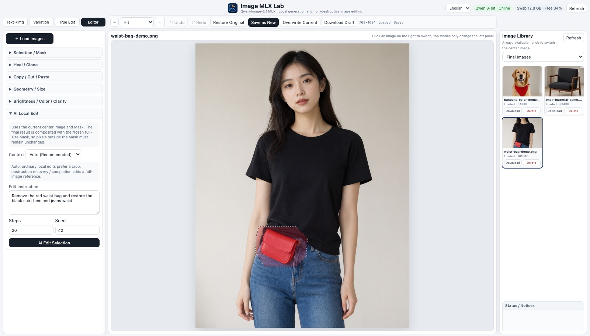
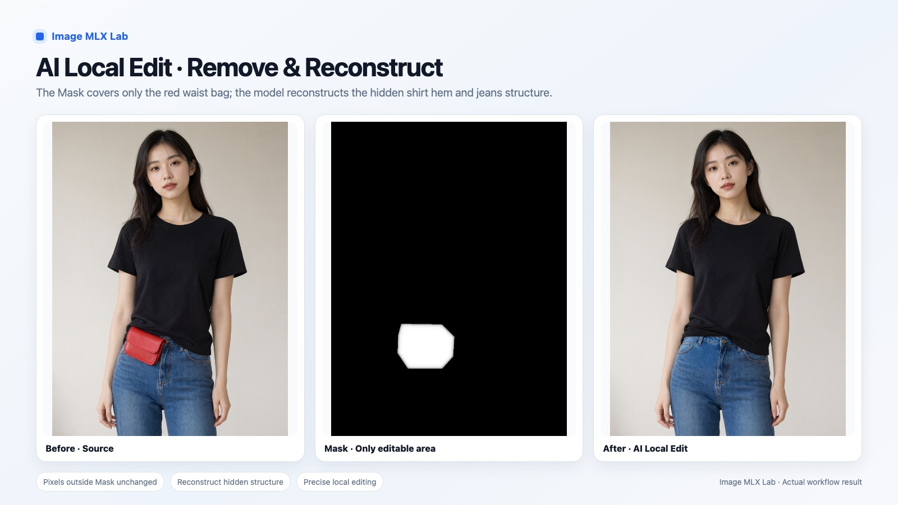
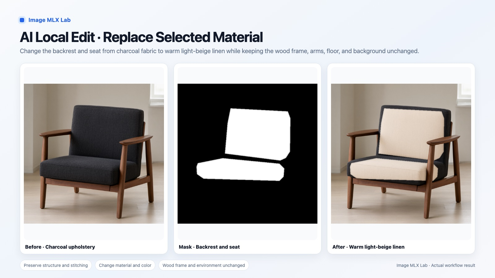
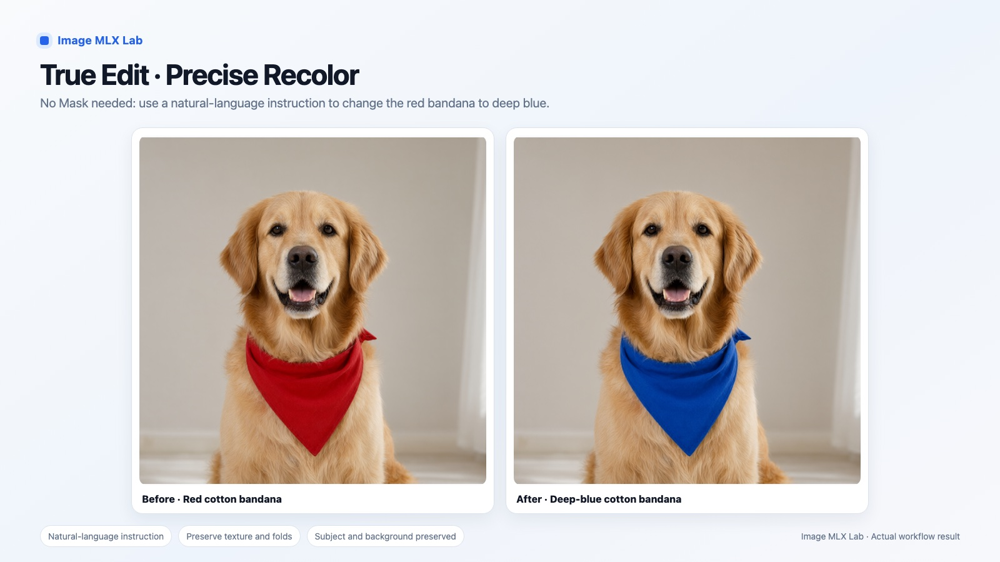
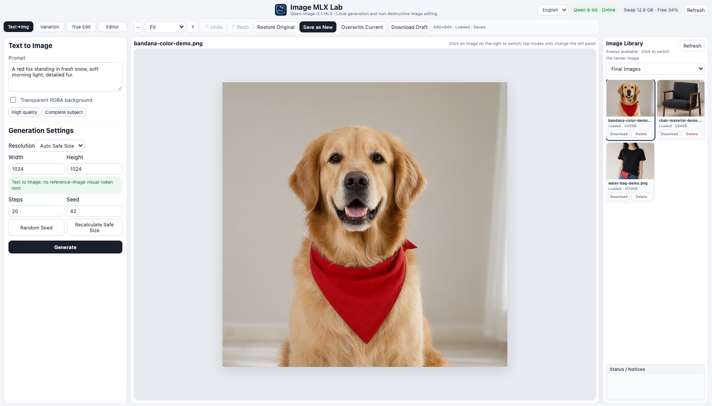

Change what you select.
Keep everything else.
Image MLX Lab generates images from a prompt and edits the ones you have — remove an object, swap a material, change a colour with a sentence. Draw a selection and only that area changes; every pixel outside it stays exactly as it was. It all runs on your own Mac with Qwen-Image on MLX. Nothing is uploaded.

What you can do with it
Personal projects, experiments and learning — with pictures you would rather not send to a cloud service.
Remove things from your photos
Take out a bag, a cable, a sign or a passer-by and let the model rebuild what was behind it — the shirt hem, the wall, the floor — inside the area you selected.
Try a colour or material first
See a sofa in linen instead of wool, a jacket in navy instead of red, a wall in another colour — before you buy, sew or paint.
Change a detail with words
“Make the scarf deep blue.” True Edit follows an instruction on the whole image, with up to three extra reference pictures for identity, pose, clothes or style.
Make new images
Generate from a prompt in English or Chinese, including transparent PNGs for your own icons, stickers and mock-ups, or create variations of an image you have.
Classic touch-ups, same place
Healing brush for dust and spots, clone stamp, copy and paste between images, crop, resize, rotate, brightness, contrast and sharpness — no second app needed.
Learn how local image models behave
Compare 4-bit and 8-bit, steps and sizes on your own Mac. Every run records its time, memory and swap, so you can see what your machine can do.
The default model, Qwen-Image-2.1, is licensed for non-commercial research and evaluation. For commercial work you need a licence from Qwen — see Licence.
Real results
Actual output of the local workflow on purpose-generated demo images — no private photos, nothing retouched afterwards.
Remove and rebuild
The mask covers only the waist bag. The model rebuilds the shirt hem, jeans waist, button and stitching behind it; the rest of the picture is untouched.

Swap a material
Backrest and seat from charcoal fabric to light beige linen; the walnut frame, floor and light stay as they were. Where the mask stops, the old fabric stays — the edges show exactly what was selected.

Recolour with an instruction
True Edit, no mask: “change the red bandana to deep blue”. The dog, its pose, fur and the background keep their look.

How it works
Four steps from a picture to an edited copy. The original is never overwritten unless you ask.
Open or generate an image
Load a PNG, JPG or WebP, or make one from a prompt. It appears in the library on the right.
Select the area
Rectangle, ellipse, lasso, brush or magic wand; grow, shrink or feather the edge.
Describe the change
The app sends a crop around your selection — plus a small view of the whole picture when context helps — to the local model.
Check and keep
The result is blended back through your mask; outside it nothing may change. It is saved as a new image beside the original.
Your pictures stay on your computer.
Image MLX Lab is built for pictures you would not hand to an online service: photos of your family, your home, your unreleased work.
From first image to finished file
The images you load, your selections, prompts and every result are stored in one folder of your copy on your Mac. Nothing is uploaded at any step.
Local AI, not a cloud API
Qwen-Image runs on your Mac's own chip through Apple's MLX. After setup no internet connection is needed to generate or edit.
No account, no telemetry
There is nothing to sign up for and nothing is reported back: no usage data, no analytics, no crash reports. We never see what you make.
Closed to other devices and websites
The workbench listens on this Mac only (127.0.0.1) and refuses requests from other web pages, so a site you visit cannot read or change your images.
Details in the privacy and security pages. The only downloads are the model, the runtime and its tools during setup.
What is in it
A workbench for generating and editing, not a prompt box.
AI local edit with a guarantee
The source image and mask are frozen when you start. The model's output is composited through the full-size mask and checked: if any pixel outside the mask changed, the result is rejected.
Context when it matters
Small edits get a sharp local crop. Removals and repairs also get a view of the whole picture, so what the model rebuilds fits the scene.
True Edit
Instruction-based editing of the whole image, with up to three reference images, each marked as identity, pose, clothes, style or detail.
Real selection tools
Rectangle, ellipse, freehand lasso, brush, magic wand, invert, expand, contract and feather — the mask is also an ordinary selection for colour work.
Non-destructive by default
Undo and redo, “save as new” as the normal save, and a prompt before an unsaved draft is ever discarded.
4-bit or 8-bit, your choice
Pick the quantized model that fits your memory and switch in the app. The editing add-on (about 1.1 GB) is optional: install it only if you want True Edit and AI local edit.
English and Chinese
The interface is in English or Chinese; prompts work in either language.
Open code, pinned versions
MIT-licensed code, a pinned model revision and a pinned runtime commit, so a setup today behaves like a setup tomorrow.

What it does not do (yet)
- It is not fast. On an M2 Max with 32 GB (8-bit model) a 512×512 image at 20 steps took about 1–1.5 minutes, an AI local edit at 480×640 and 20 steps about 5 minutes, and a True Edit at 1152×640 and 36 steps 11–17 minutes.
- It needs an Apple Silicon Mac. 32 GB of memory is recommended; the 4-bit model needs about 14 GB free while loading, and the 8-bit model on 32 GB usually needs the memory check skipped, with heavy swap.
- It is a developer install for now: Xcode with its Metal toolchain, a terminal, and 12–20 GB of downloads. There is no signed installer yet, and the install has so far been verified on the development Mac only; if it fails on yours, please open an issue.
- Edits are not always clean. A mask that stops short leaves the old surface at its edge, and some removals show a seam; check every result before you use it.
- The quantized MLX models are not identical to the official full-precision Qwen-Image-2.1, and the default model is for non-commercial use only.
Install
On an Apple Silicon Mac with Xcode 26.2+ (with the Metal toolchain) and Homebrew:
brew install cmake git clone https://github.com/hera2019/image-mlx-lab.git && cd image-mlx-lab python3 -m venv .venv .venv/bin/pip install -r requirements.txt .venv/bin/python scripts/setup_model.py --model qwen-image-2.1-mlx-4bit open Start-Image-MLX-Lab.command
Setup downloads the model (about 10 GB for 4-bit, 17.6 GB for 8-bit), asks whether to add the optional editing module (about 1.1 GB), and builds the pinned runtime. The user guide covers every step. The model is downloaded from its publishers under its own licence.
Questions
Does it upload my images?
No. The model runs on your Mac; images, masks, prompts and results stay in a folder on your computer. No account, no cloud, no telemetry.
Is it free? Can I use it commercially?
The code is free under the MIT License. The default Qwen-Image-2.1 model is licensed for non-commercial research and evaluation only; commercial use needs a licence from Qwen. Details.
Can it remove an object from a photo?
Yes: select it, describe the change, and the AI local edit rebuilds only that area. Pixels outside the selection are kept exactly.
Can I edit photos of other people?
Only in ways they would agree to, and never to make sexual, deceptive or humiliating images of anyone. See responsible use.
What Mac do I need?
Apple Silicon (M1 or later). 32 GB of memory is recommended; the 4-bit model needs about 14 GB free while loading.
Which languages?
An English or Chinese interface; prompts in English or Chinese.
Licence
Two licences apply. The Image MLX Lab code is free and open source under the MIT License — © 2026 Houjun Co., Ltd. The default Qwen-Image-2.1 model is not ours: it comes under the Qwen Research License, which allows non-commercial research and evaluation only. The model is not included; you download it during setup.